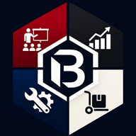

T
Staff training
Track course completion for opening standards, cash control, equipment care, and service recovery.

BONNIER ALAIN JEAN JACQUESA focused Android workspace for staff training, revenue review, maintenance follow-up, and equipment checkout records.
The app keeps common staff tasks in one local mobile experience so managers can review work quickly during a shift.
Track course completion for opening standards, cash control, equipment care, and service recovery.
Review revenue movement, service line pacing, and operational focus areas in a compact dashboard.
Create local issue records, assign urgency, and move requests through open, scheduled, and resolved states.
Record who has key equipment, due dates, and returned status so daily handoffs stay clear.
Home, courses, revenue, requests, equipment, and privacy screens are designed for quick phone use by managers and staff.
Records and preferences are stored on the Android device. The app does not require sign-in, does not send records to a server, and does not request Android permissions.